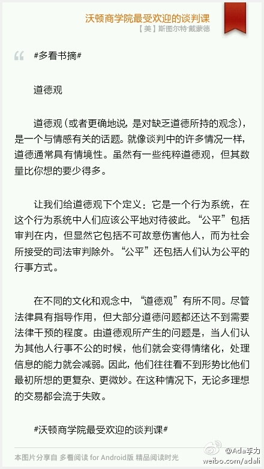
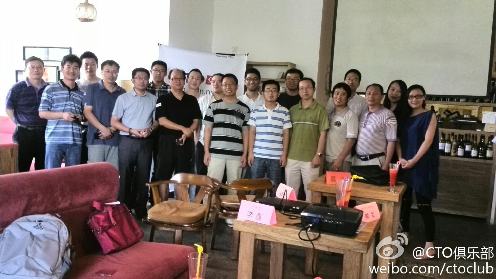
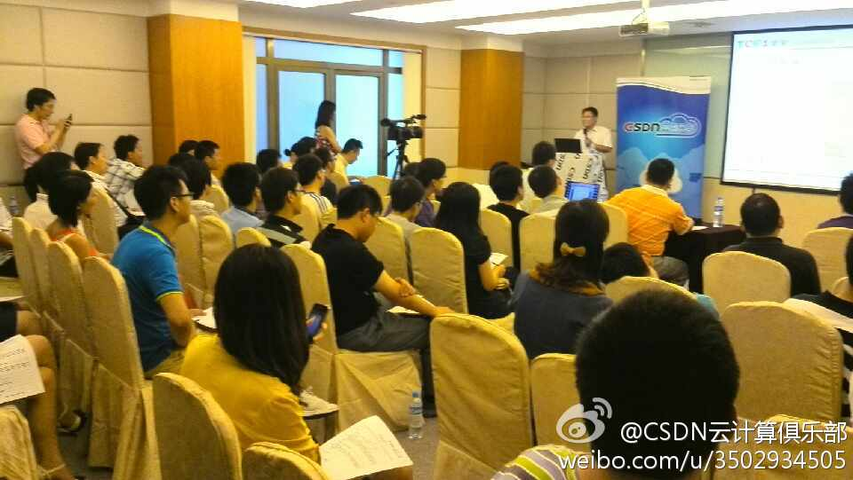
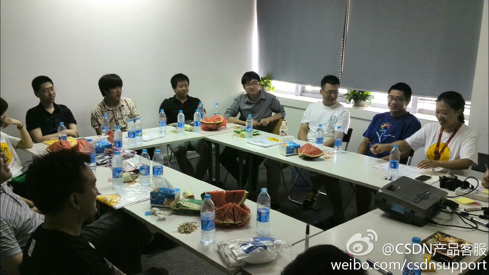

#多看书摘# 道德观 道德观（或者更确地说，是对缺乏道德所持的观念），是一个与情感有关的话题。就像谈判中的许多情况一样，道德通常具有情境性。虽然有一些纯粹道德观，但其数量比你想的要少得多。 让我们给道德观下个定义：它是一个行为系统，在这个行为系统中人们应该公平地对待... 
明俊总说姣姣吃饭慢，吃得少，早上很多次听到他在吼姣姣。我觉得吃饭快慢，天生原因更大，姣姣小时候喝奶也是不紧不慢，对零食饮料不怎么上心，她买一包辣条子，每天叼一根，能吃上一星期。这会儿看到姣姣在喝可乐，那瓶可乐放冰箱至少有四天，她每天取出嘬两口后，再放回去。
明俊最常吼姣姣的是“磨蹭”，吃饭慢是磨蹭，写作业慢是磨蹭，穿衣服也是磨蹭…… 我和明俊辩论，通常人不喜欢做某事而又不得不做时，不是磨蹭就是拖延。而姣姣只是做事儿有她自己的节奏，这种节奏在部队里呆了许多年的明俊来看，都是慢，都是磨蹭。
明俊说以后不许说不知道，要姣姣必须给出答案。姣姣就高兴地放下书本跟爸爸下楼了。出门时跟我说拜拜，还亲我好几口。@Ada李力:姣姣有句口头禅：我不知道。她不想回答问题时，或者不想表明态度时都用这招。明俊要下楼擦车，正看书的姣姣轻声说：我也想去。我鼓励她去跟爸爸一起擦车，明俊就问姣姣要在家看书，还是下楼？姣姣回答：我不知道。
大家一致认为，这种交流要坚持，另外，会员可以提供活动支持，资源和赞助的。这才是社区活动的做法。@CTO俱乐部:电子商务下午茶最后的一个议题讨论，这类活动以后多长时间做一次？CTO俱乐部电子商务专委会决定是：一月做一次聚会活动。 
今天气温高达35度，还是有很多朋友来参加下午活动。CTO俱乐部讲师@pku侯明强 说带他的团队来听讲。@CSDN云计算俱乐部:云计算俱乐部交流会云视频服务活动应讲师要求，时间安排在周末。报名踊跃，两百多人报名。网页链接 
版主们在讨论站内搜索，广告展示，技术社区是否要开征婚版块，等等。@CSDN产品客服:产品运营组与论坛版主座谈会，讨论以下议题：1. 论坛今年发展计划；2. 版主激励改进；3. 商务项目配合 我在这里:北京·福码大厦 